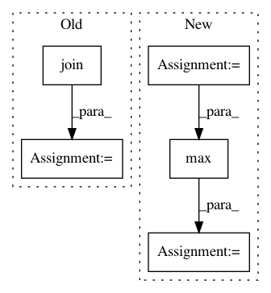

a2e45b8fdde315b756691b4ae573ad55f55dc002,homeassistant/components/history.py,,get_states,#Any#Any#Any#,93
Before Change
if entity_ids is not None:
where += "AND entity_id IN ({}) ".format(
",".join(["?"] * len(entity_ids)))
where_data.extend(entity_ids)
query =
SELECT * FROM states
INNER JOIN (
SELECT max(state_id) AS max_state_id
FROM states WHERE {}
GROUP BY entity_id)
WHERE state_id = max_state_id
.format(where)
return recorder.query_states(query, where_data)
After Change
from sqlalchemy import and_, func
states = recorder.get_model("States")
most_recent_state_ids = recorder.query(
func.max(states.state_id).label("max_state_id")
).filter(
(states.created >= run.start) &
(states.created < utc_point_in_time)
)
if entity_ids is not None:
most_recent_state_ids = most_recent_state_ids.filter(
states.entity_id.in_(entity_ids))
most_recent_state_ids = most_recent_state_ids.group_by(
states.entity_id).subquery()
query = recorder.query("States").join(most_recent_state_ids, and_(
states.state_id == most_recent_state_ids.c.max_state_id))
In pattern: SUPERPATTERN
Frequency: 3
Non-data size: 5
Instances
Project Name: home-assistant/home-assistant
Commit Name: a2e45b8fdde315b756691b4ae573ad55f55dc002
Time: 2016-07-02
Author: rhooper@toybox.ca
File Name: homeassistant/components/history.py
Class Name:
Method Name: get_states
Project Name: interactiveaudiolab/nussl
Commit Name: f52e1f9e29920c813a4b3403ded46d5be4041658
Time: 2017-06-22
Author: daniel.felixkim@gmail.com
File Name: tests/test_duet.py
Class Name: DuetUnitTests
Method Name: test_compute_spectrogram_wmat
Project Name: dgasmith/opt_einsum
Commit Name: 05de336e95320733969c86d22a0bf0ae78d438e0
Time: 2018-06-18
Author: john.gray.14@ucl.ac.uk
File Name: opt_einsum/parser.py
Class Name:
Method Name: parse_einsum_input